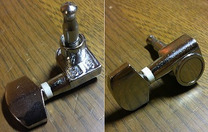
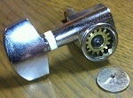
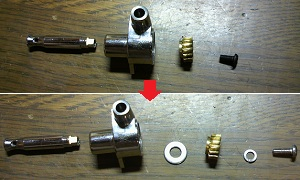
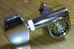

ロトマチックペグの分解と改造
2011年10月19日 カテゴリー：ギター関係
Sepia Crue EAW-180というギターをジャンクで入手しまして、それについていたペグを分解と改造（という程ではない）をしてみました。

上写真が分解前です。よく見るとSSと刻印がありますが詳細は不明です。ギター自体は中国製と書いてありました。
ペグの裏側に丸い金属板がハメこんであり、これを取り外すのが大変です。マイナスドライバー等で端をこじってみましたがなかなか取れません。結局ドリルで穴を開け、そこに針金を挿し込んで外しました（下写真）。マイナスドライバー等で取り外す場合でも丸い金属板は傷だらけになってしまうと思われます。

こういう安ギターのペグに限らずペグのポストはグラグラしていることが多く、有名なGROVER製のペグでもそうです。ただGOTOH製のペグはポストが安定した作りのものがあるので、安定させることに意味はあるんだと思います。
今回はワッシャーを挟み込んで安定化してみます（下写真）。

左側のワッシャーは普通のM4平ワッシャーで、右側のワッシャーはM3スプリングワッシャーです。ついでにネジを長めのものにしています（M3のネジでうまく合いました）。左側のワッシャーを入れるとギアのかみ合わせ位置が変わってしまうので、本来は入れてはいけない気がします。しかしながら入れたほうがポストが安定するようなので実験的に入れています。また、気休めにワウペダル用のグリスを塗っておきました。
下写真が改造後です。ワッシャーを挟んだので分解時に取り外した丸い金属板は取り付けられなくなりました。見た目はHIPSHOT製のペグみたいな感じです。ギアが露出していること自体は大して問題はないと思います。

動きはやはり硬くなりましたが、機能に支障はないようです。改造前の音がわからないので良くなったかどうかは不明ですが、なんとなく安定感は増したと思います。